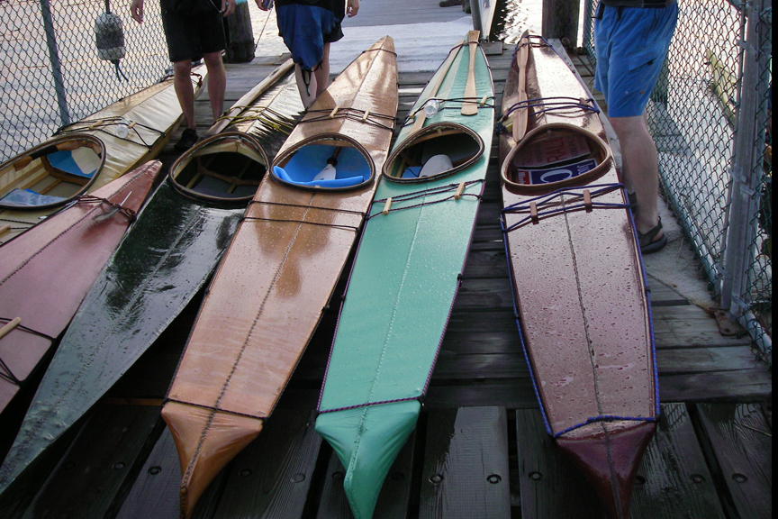

| Nikumi's by Yonkers Paddling & Rowing Club (US) | Menu Previous Page Next Page |
|

Pictured above are four Nikumi Baidarka's, one Sea Bee, and one Sea Ranger built in a class sponsored by the Yonkers Paddling and Rowing Club (YPRC) and taught by Jack Gilman in Yonkers, New York. Below is a two part video by Duncan Raymond of the Nikumi Baidarka's and a paddle being built at the YPRC last winter.
Made by Hand, Baidarka's on the Hudson ( Part 1 of 2)
Made by Hand, Baidarka's on the Hudson ( Part 2 of 2) Use the (BACK) key to return. |
|